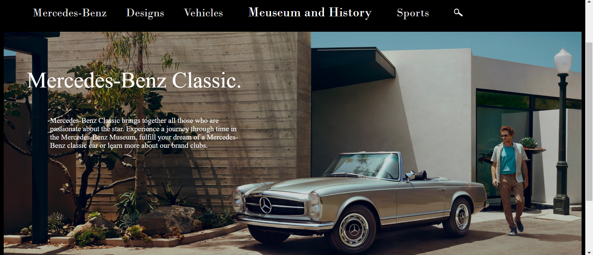

Merc website replica
Created this UI/UX replica design of the Mercedes international website for a college project with only HTML and CSS. The design is responsive and easy to navigate. The website design is hosted on GitHub https://ekamjit105.github.io/mercweb/

University Admission Form
A basic design of University Admission form designed using only HTML tables and input types.

Photshop edits
Raw image to Portrait mode
So this image got a full makeover in order to be converted to a portrait mode picture and the steps involved were pretty simple.
Steps Involved
Firstly the clicking angle needed to be changed so that the pic appears to be clicked from a slightly greater height (in line with the face). This can be compared through the pillars which appear to be slightly tilted backwards in the second (orignal) picture
Then the pic had to be cropped in such a way that it appeared to be taken within a range of 2.5 meters (portrait photography optimum distance).
Next, the righside of the face had to be completely recolourised in order to remove the shadowy effect. This also involved adjusting lighting in the background part and making left side appear slightly brighter.
Finally, the depth had to be controlled in order to make the background look a bit blurred and yes, we are done!